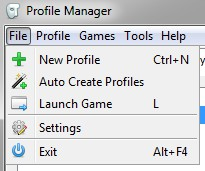

Here are some basic steps to get you started when running the profile manager for the first time:

If your games are not installed in the default location be sure to open the settings window and update where the files are located. See Preferences and Settings Window for more information about how to do this.
If you already have saved games, open the file menu and click "Auto Create Profiles" the Profile Manager will then sort your saved games into profiles, one for each character. If you don't already have saved games open the file menu and click "New Profile".
The other sections in this chapter cover the basics of how to use the profile manager, and explain what each buttons does and how to edit a profile.